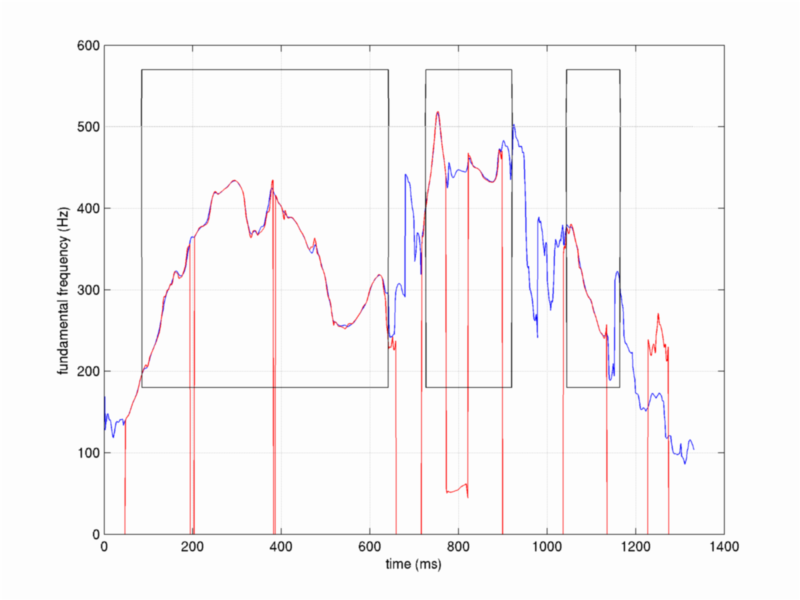
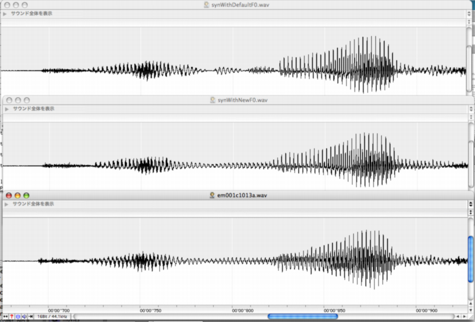

| 新しい基本周波数抽出方法と既存の方法の比較 | Contents | Index |
ここでは，既存の方法では問題が生じてうまく再合成できない音声を用いて， 新しい基本周波数抽出法の効果を紹介します。 この音声は，e-Societyで収録した強い表現の音声「お湯がわきました」です。 以下のMatlabスクリプトは，既存の方法と新しい方法の両方を用いてこの音声を分析し， 再合成するときに用いたものです。
[x,fs]=wavread('../Sample/em001c1013a.wav');
[f0raw,vuv,auxouts,prmouts]=MulticueF0v14(x,fs);
[ap,analysisParams]=exstraightAPind(x,fs,f0raw);
[n3sgram,prmP]=exstraightspec(x,f0raw.*vuv,fs);
[f0rawFixp,apFixp,analysisParams]=exstraightsource(x,fs);
[n3sgramFixp,prmP]=exstraightspec(x,f0rawFixp,fs);
[sy,prmS] = exstraightsynth(f0raw.*vuv,n3sgram,ap,fs);
[syFixp,prmS] = exstraightsynth(f0rawFixp,n3sgramFixp,apFixp,fs);
元の音声と，再合成された音声を以下にリンクしておきます。
抽出された基本周波数の軌跡を以下の図に示します。赤の線で示された軌跡は，既存の方法によるものです。青の線で示された軌跡は，新しい方法によるものです。新しい方法は，無声子音の部分や無音の部分でも0ではない基本周波数の値を出力しています。有声／無声の情報は，vuvという変数に二値で格納されています。下の図の黒線で囲まれた部分が，新しい方法で有声音と判定された部分です。
再合成された音声と元の音声の波形の一部を下の図に示します。 上から順に，既存の方法による再合成音声，新しい方法による再合成音声，原音声を示します。 既存の方法にあった基本周波数の軌跡の乱れや不連続が，新しい方法には認められません。 その結果、再合成音声に生じていた乱れも，新しい方法では生じていません。 例えば，以下の図の800ms付近を見ると，新しい方法の効果が良く分かります。

| 新しい基本周波数抽出方法と既存の方法の比較 | Contents | Index |